Vertical Tabs for File Explorer
File Explorer tabs in a column on the left, a folders bar like Chrome's bookmarks bar, and windows that come back when you reopen File Explorer.
Le schede di Esplora file in una colonna a sinistra, una barra delle cartelle come la barra dei segnalibri di Chrome, e finestre che tornano quando riapri Esplora file.
Free and open source, MIT license. Windows 11 22H2 or later, 64-bit. Version 1.5.1.
Gratis e open source, licenza MIT. Windows 11 22H2 o successivo, a 64 bit. Versione 1.5.1.
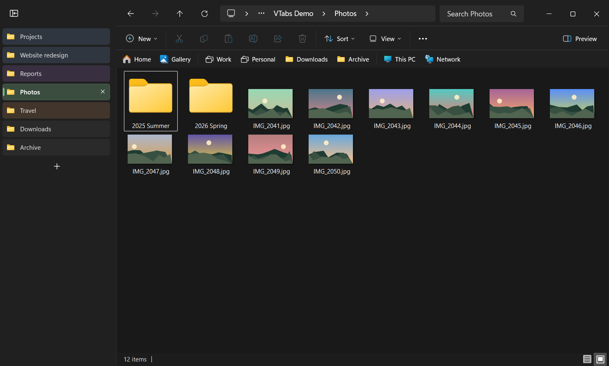
Vertical tabsSchede verticali
The tabs move into a column that starts at the top of the window. The empty title row is hidden: the address bar moves up next to the window buttons, and the address and command bars take the color of the title bar, so the folder sits in a single frame. Under the hood they are still File Explorer's own tabs.
Le schede si spostano in una colonna che parte dalla cima della finestra. La riga del titolo, rimasta vuota, si nasconde: la barra degli indirizzi sale accanto ai pulsanti della finestra, e la barra degli indirizzi e quella dei comandi prendono il colore della barra del titolo, così la cartella sta in un'unica cornice. Sotto restano le schede di Esplora file.
- Click to switch, middle-click or × to close, + for a new tab.
- Drag a tab to reorder it: File Explorer's real tabs move too.
- Right-click for File Explorer's own tab menu, plus Tab color, with the colors of Chrome's tab groups.
- A color belongs to the tab: it follows the tab to other folders and comes back with the session.
- Collapse the column to icons, or drag its edge to resize it. Width and state apply to every window.
- Clic per cambiare scheda, clic centrale o × per chiudere, + per una scheda nuova.
- Trascina una scheda per spostarla: si spostano anche le schede vere di Esplora file.
- Clic destro per il menu della scheda di Esplora file, più Colore scheda, con i colori dei gruppi di schede di Chrome.
- Il colore appartiene alla scheda: la segue nelle altre cartelle e torna con la sessione.
- Comprimi la colonna in sole icone, o trascinane il bordo per allargarla. Larghezza e stato valgono per tutte le finestre.
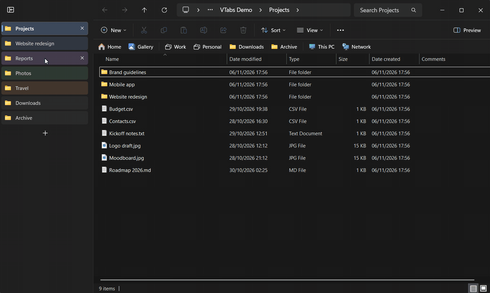
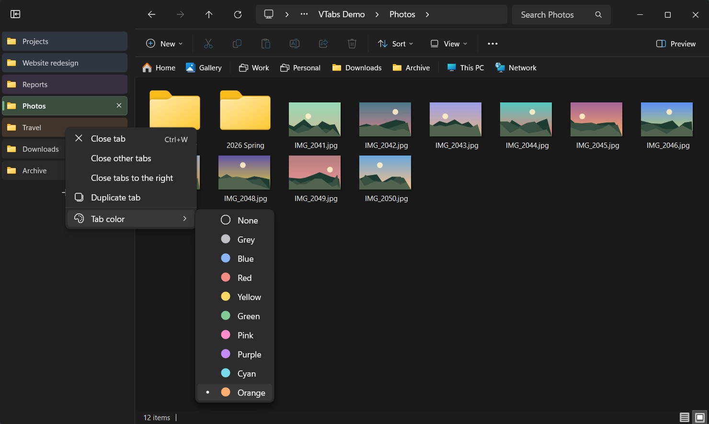
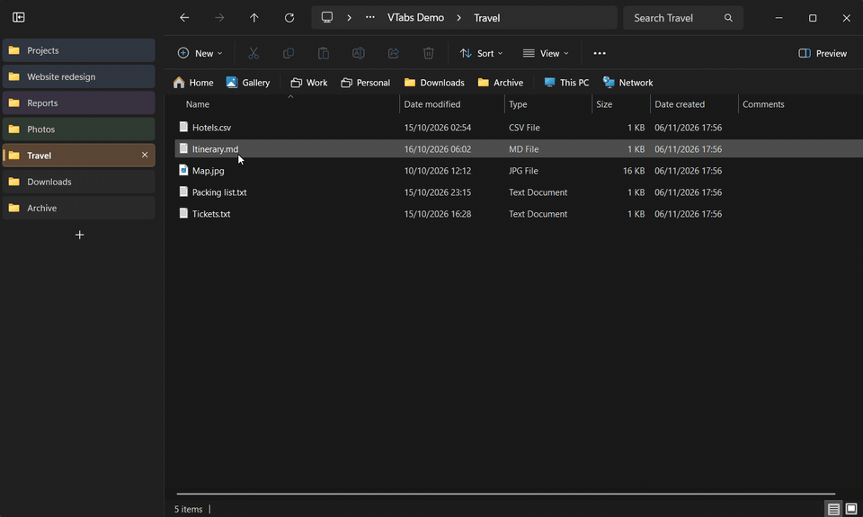
Folders bar and groupsBarra delle cartelle e gruppi
The navigation pane becomes a bar under the command bar, like Chrome's bookmarks bar: Home, Gallery, your Quick Access folders, This PC and Network, in the same order and with the same icons. It works with or without the vertical tabs.
Il riquadro di spostamento diventa una barra sotto la barra dei comandi, come la barra dei segnalibri di Chrome: Home, Galleria, le cartelle di Accesso rapido, Questo PC e Rete, nello stesso ordine e con le stesse icone. Funziona con o senza le schede verticali.
- Click opens a folder in the current tab, middle-click in a new tab.
- Right-click shows the Windows 11 context menu, the same one as the navigation pane.
- Drag your Quick Access folders to reorder them: Windows uses the same order in the navigation pane, in Home and in the taskbar menu.
- Drag a folder from File Explorer onto the bar to pin it to Quick Access right there, like a link dropped on Chrome's bookmarks bar. Drop it on the middle of a group to put it in the group, or stop on the group for a moment: its list opens, and you can drop the folder exactly where you want it.
- Items that don't fit go into the » list.
- Il clic apre la cartella nella scheda attuale, il clic centrale in una scheda nuova.
- Il clic destro mostra il menu di Windows 11, lo stesso del riquadro di spostamento.
- Trascina le cartelle di Accesso rapido per riordinarle: Windows usa lo stesso ordine nel riquadro di spostamento, nella Home e nel menu della barra delle applicazioni.
- Trascina una cartella da Esplora file sulla barra per aggiungerla ad Accesso rapido proprio lì, come un link lasciato sulla barra dei segnalibri di Chrome. Lasciala al centro di un gruppo per metterla nel gruppo, oppure fermati un attimo sul gruppo: il suo elenco si apre, e la cartella si lascia esattamente dove vuoi.
- Le voci che non ci stanno finiscono nell'elenco ».
Groups work like Chrome's bookmark folders: a group collects folders and other groups. Click it to open its list. Once a list is open, hovering another group switches to it at once. Middle-click opens all the folders of a group in new tabs. Groups exist only in the bar: your folders stay in Quick Access.
I gruppi funzionano come le cartelle dei segnalibri di Chrome: un gruppo raccoglie cartelle e altri gruppi. Un clic apre il suo elenco. Con un elenco aperto, passando su un altro gruppo si apre subito il suo. Il clic centrale apre tutte le cartelle del gruppo in schede nuove. I gruppi esistono solo nella barra: le cartelle restano in Accesso rapido.
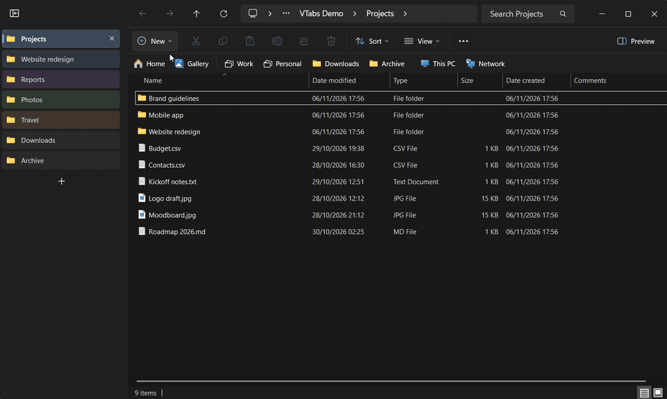
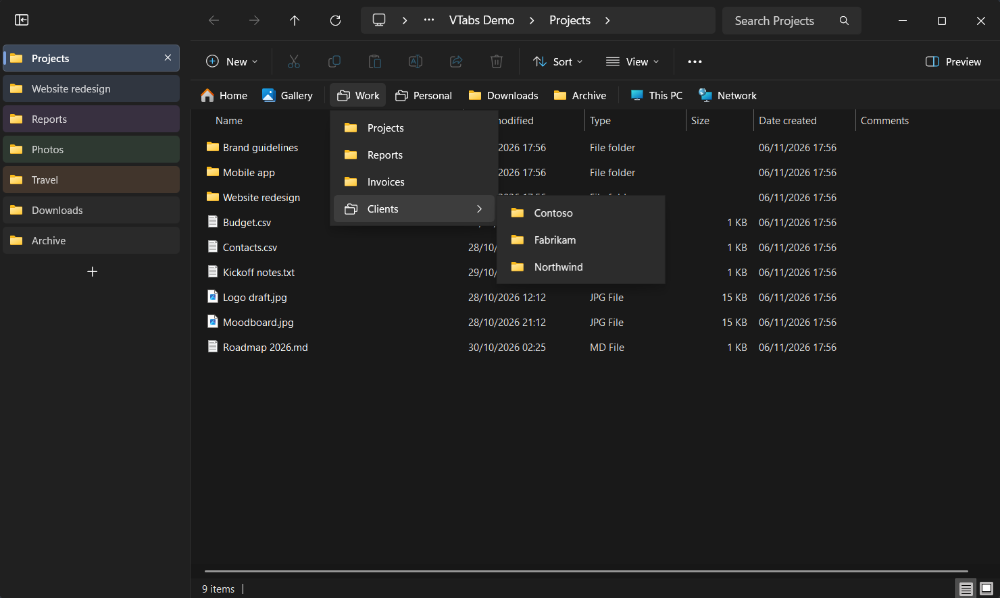
To put a folder into a group, drag it onto the group and wait a moment: the group opens, and you can drop the folder exactly where you want it. This works from the bar, from a group's list and from one group to another.
Per mettere una cartella in un gruppo, trascinala sul gruppo e aspetta un attimo: il gruppo si apre, e puoi lasciare la cartella esattamente dove vuoi. Vale dalla barra, dall'elenco di un gruppo e da un gruppo all'altro.
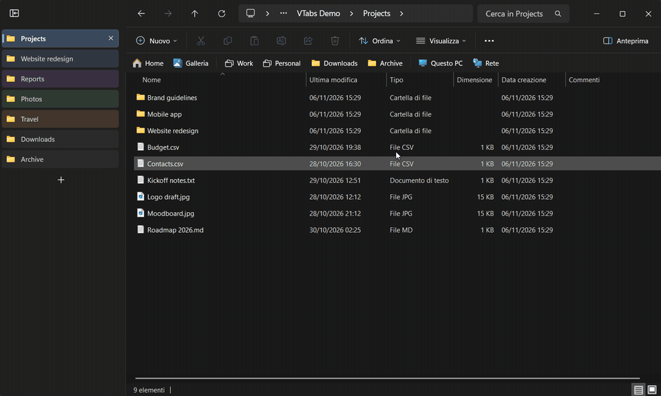
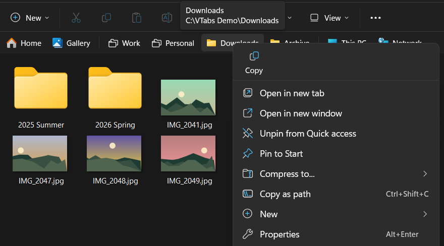
Windows that come backFinestre che tornano
File Explorer forgets everything when you close it or restart the PC. The app remembers every window, its tabs in order, the active tab, the tab colors, the position and the size, and brings them back when you open File Explorer again.
Esplora file dimentica tutto quando lo chiudi o riavvii il PC. L'app ricorda ogni finestra, le sue schede in ordine, la scheda attiva, i colori delle schede, la posizione e la dimensione, e le riporta quando riapri Esplora file.
Each window appears complete: it stays invisible while its tabs are rebuilt, then shows up all at once. If another app opened File Explorer on a specific folder, that folder stays in front and the session's tabs are added next to it. Folders that no longer exist are skipped.
Ogni finestra compare già completa: resta invisibile mentre le sue schede si ricostruiscono, poi appare tutta insieme. Se un altro programma ha aperto Esplora file su una cartella precisa, quella resta davanti e le schede della sessione si aggiungono accanto. Le cartelle che non esistono più vengono saltate.
Reopen closed tabsRiapri le schede chiuse
Press Ctrl+Shift+T to bring back the tab you just closed: it returns in its place, with its color, as the active tab (with the vertical tabs on; otherwise at the end of the list). If you closed a whole window, the whole window comes back with all its tabs. Press again to go further back, up to 25 times, even after a restart.
Premi Ctrl+Maiusc+T per riavere la scheda appena chiusa: torna al suo posto, con il suo colore, come scheda attiva (con le schede verticali accese; altrimenti in fondo all'elenco). Se hai chiuso un'intera finestra, torna tutta la finestra con le sue schede. Premendo di nuovo vai a ritroso, fino a 25 volte, anche dopo un riavvio.
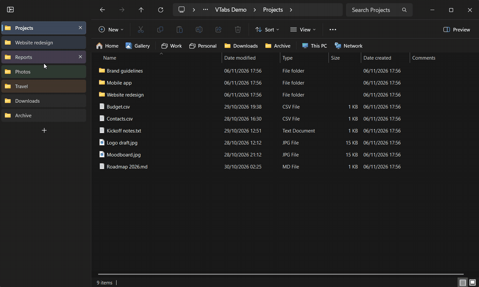
Folders from other apps open in a tabLe cartelle degli altri programmi in una scheda
When another app opens a folder while File Explorer is open (a "Show in folder" button, a desktop shortcut, Start search), the folder arrives as a new tab of the window you used last, like links in Chrome. If the app wanted to show a file, the file is selected. Ctrl+N, "Open in new window" and Win+E still open new windows.
Quando un altro programma apre una cartella mentre Esplora file è aperto (un pulsante "Mostra nella cartella", un collegamento sul desktop, la ricerca di Start), la cartella arriva in una scheda nuova della finestra usata per ultima, come i link in Chrome. Se il programma voleva mostrare un file, il file è selezionato. Ctrl+N, "Apri in una nuova finestra" e Win+E aprono comunque finestre nuove.
Back to topTorna su
Scroll down a long folder and a round button fades in at the bottom right. One click goes back to the top, without taking the focus away from File Explorer.
Scorri una cartella lunga e in basso a destra compare sfumando un pulsante tondo. Un clic torna all'inizio, senza togliere il fuoco a Esplora file.
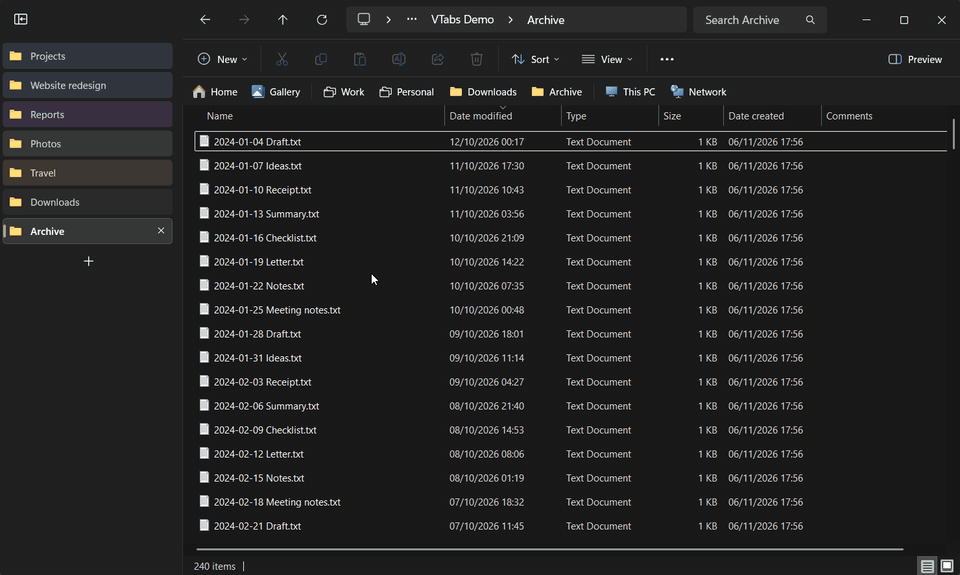
InstallInstallazione
- Download
VTabsExplorer-1.5.1-setup.exefrom the latest release. - Run it. No administrator rights needed: it installs for your user only, in English or Italian. It asks whether to start with Windows and whether to turn on the vertical tabs and the folders bar.
- That's it: the app runs in the notification area, and the open File Explorer windows get the new tabs right away.
- Scarica
VTabsExplorer-1.5.1-setup.exedall'ultima release. - Avvialo. Non servono diritti di amministratore: si installa solo per il tuo utente, in italiano o in inglese. Chiede se avviarsi con Windows e se attivare le schede verticali e la barra delle cartelle.
- Fatto: l'app resta nell'area di notifica, e le finestre di Esplora file aperte prendono subito le nuove schede.
The installer isn't code-signed, so SmartScreen may say "Windows protected your PC": choose More info › Run anyway. For the vertical tabs and the folders bar the app loads a module into File Explorer, which some security software flags. The source code is public, and you can build it yourself.
L'installer non ha una firma digitale, quindi SmartScreen può dire "PC protetto da Windows": scegli Ulteriori informazioni › Esegui comunque. Per le schede verticali e la barra delle cartelle l'app carica un modulo dentro Esplora file, e qualche antivirus lo segnala. Il codice sorgente è pubblico, e puoi compilarlo da te.
RequirementsRequisiti
- Windows 11 22H2 or later, 64-bit: the File Explorer with tabs.
- Tested on Windows 11 26H2 (build 26300). A Windows update can break the vertical tabs or the folders bar: if that happens, turn them off from the tray menu.
- Windows 11 22H2 o successivo, a 64 bit: l'Esplora file con le schede.
- Provato su Windows 11 26H2 (build 26300). Un aggiornamento di Windows può rompere le schede verticali o la barra delle cartelle: in quel caso spegnile dal menu della tray.
OptionsOpzioni
Right-click the icon in the notification area:
Clic destro sull'icona nell'area di notifica. Con Windows in italiano le voci sono queste; nell'immagine, Windows è in inglese.
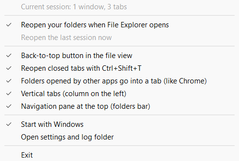
| Menu item | Default |
|---|---|
| Reopen your folders when File Explorer opens | On |
| Reopen the last session now | When no window is open |
| Back-to-top button in the file view | On |
| Reopen closed tabs with Ctrl+Shift+T | On |
| Folders opened by other apps go into a tab (like Chrome) | On |
| Vertical tabs (column on the left) | Chosen in the setup |
| Navigation pane at the top (folders bar) | Chosen in the setup |
| Start with Windows | Chosen in the setup |
| Open settings and log folder | |
| Exit |
| Voce del menu | Predefinito |
|---|---|
| Riapri le cartelle all'apertura di Esplora file | Attiva |
| Riapri ora l'ultima sessione | |
| Pulsante «Torna su» nella vista dei file | Attiva |
| Riapri la scheda chiusa con Ctrl+Maiusc+T | Attiva |
| Cartelle aperte da altri programmi in una scheda (come Chrome) | Attiva |
| Schede verticali (colonna a sinistra) | Scelta nell'installazione |
| Riquadro di spostamento in alto (barra delle cartelle) | Scelta nell'installazione |
| Avvia con Windows | Scelta nell'installazione |
| Apri cartella impostazioni e log | |
| Esci |
Safety and privacySicurezza e privacy
The vertical tabs and the folders bar run inside explorer.exe, which also hosts the taskbar and the desktop. The app watches it: if File Explorer crashes with the module loaded, both features are suspended at once and stay off until you turn them on again from the tray menu. The other features don't load anything into File Explorer.
Le schede verticali e la barra delle cartelle lavorano dentro explorer.exe, che ospita anche la barra delle applicazioni e il desktop. L'app lo sorveglia: se Esplora file si chiude per un errore con il modulo caricato, le due funzioni vengono sospese subito e restano spente finché non le riattivi dal menu della tray. Le altre funzioni non caricano nulla dentro Esplora file.
- The app works offline: no network access, no telemetry, no account.
- It never reads the content of your files. It stores folder paths, because it needs them to reopen your windows.
- Everything stays in
%LOCALAPPDATA%\VTabsExplorer: the options, the last session, the closed tabs, the groups and the logs. The logs contain folder paths: have a look before sharing them.
- L'app funziona offline: niente rete, niente telemetria, nessun account.
- Non legge mai il contenuto dei file. Salva i percorsi delle cartelle, perché le servono per riaprire le finestre.
- Tutto resta in
%LOCALAPPDATA%\VTabsExplorer: le opzioni, l'ultima sessione, le schede chiuse, i gruppi e i registri. I registri contengono percorsi di cartelle: controllali prima di condividerli.
QuestionsDomande
Do I need the vertical tabs for the other features?
No. Session restore, Ctrl+Shift+T, folders in tabs and the back-to-top button work on their own, from outside File Explorer.
Does it change File Explorer?
No. Nothing changes on disk. While the app runs, the vertical tabs and the folders bar come from a module loaded into File Explorer. Turn them off and File Explorer's own tab strip and navigation pane come back right away. Exit the app, or uninstall it, and the module leaves File Explorer completely.
What happens if File Explorer crashes?
Windows restarts it as usual. If the module was loaded, the app suspends the vertical tabs and the folders bar and tells you. Your folders come back the next time you open File Explorer.
Why doesn't the bar show all my Quick Access folders?
Windows lists at most 50 folders pinned to Quick Access, in the navigation pane and in Home too, and the bar shows the same ones. If you pin more, the last ones don't appear anywhere.
Why do Windows or my antivirus warn me?
The installer isn't signed yet, and loading a module into explorer.exe is something security tools watch closely. The code is open: you can read it and build it yourself.
A Windows update broke something.
File Explorer's interface can change with an update. Turn the feature off from the tray menu, and open an issue with your Windows version (Win+R, then winver).
Which languages does the app speak?
English and Italian. The app follows the Windows display language: Italian if Windows is in Italian, English for every other language. The installer and this website do the same.
How do I uninstall it?
Settings › Apps › Installed apps › Vertical Tabs for File Explorer › Uninstall. The uninstaller closes the app, so open windows go back to File Explorer's own tabs right away, and asks whether to delete your settings and saved data too.
Servono le schede verticali per le altre funzioni?
No. Ripristino della sessione, Ctrl+Maiusc+T, cartelle in una scheda e "Torna su" funzionano da sole, dall'esterno di Esplora file.
Modifica Esplora file?
No. Su disco non cambia niente. Mentre l'app è aperta, schede verticali e barra delle cartelle vengono da un modulo caricato dentro Esplora file. Spegnile e tornano subito la barra delle schede e il riquadro di spostamento di Esplora file. Chiudi l'app, o disinstallala, e il modulo esce del tutto da Esplora file.
Cosa succede se Esplora file si chiude per un errore?
Windows lo riavvia come sempre. Se il modulo era caricato, l'app sospende le schede verticali e la barra delle cartelle e te lo dice. Le cartelle tornano la prossima volta che apri Esplora file.
Perché la barra non mostra tutte le mie cartelle di Accesso rapido?
Windows elenca al massimo 50 cartelle aggiunte ad Accesso rapido, anche nel riquadro di spostamento e nella Home, e la barra mostra le stesse. Se ne aggiungi di più, le ultime non compaiono da nessuna parte.
Perché Windows o l'antivirus mi avvisano?
L'installer non ha ancora una firma digitale, e caricare un modulo dentro explorer.exe è una cosa che i programmi di sicurezza tengono d'occhio. Il codice è aperto: puoi leggerlo e compilarlo da te.
Un aggiornamento di Windows ha rotto qualcosa.
Un aggiornamento può cambiare l'interfaccia di Esplora file. Spegni la funzione dal menu della tray e apri una segnalazione con la versione di Windows (Win+R, poi winver).
In che lingua è l'app?
In italiano e in inglese. L'app segue la lingua di visualizzazione di Windows: italiano se Windows è in italiano, inglese per tutte le altre lingue. Lo stesso vale per l'installazione e per questo sito.
Come si disinstalla?
Impostazioni › App › App installate › Vertical Tabs for File Explorer › Disinstalla. La disinstallazione chiude l'app, quindi le finestre aperte tornano subito alle schede di Esplora file, e chiede se eliminare anche impostazioni e dati salvati.